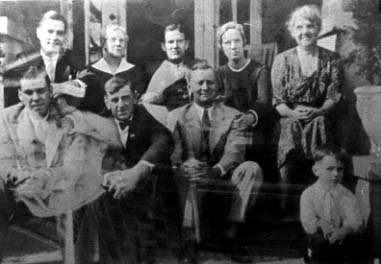

Here's a photograph of the Coble family. It has the following inscription: "Top: Wesley Coble, -, Paul Coble, Caroline Jones, Aunt Kate Griffith, Bottom Row: James Griffith, "Uncle Jim Griffith, Wilson Jones, Kenneth Jones April 1934," written by Kenneth Jones and taken from his scrapbook. (I suspect the - may be Carrie Virginia nee Rudge Coble).
Last updated on 15 Mar 2008